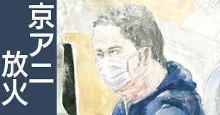

2024年の気になったニュース
京都アニメーション放火事件の被告に死刑判決
なぜこのニュースをえらんだのか？
事件当時の自分は中学生でテレビでこの事件を知り、アニメについてとても詳しかったとはいえない自分でも知ってるぐらい大きいアニメの制作会社で京都アニメーションさんが作ったアニメも見たこともあり自分にとって印象に残った事件の犯人の判決という事で目に付いたからです。
このニュースを見て感じた事・考えたこと
36人もの人を殺し、32人もの方に重軽傷を負わせたという残虐な事件の判決は、死刑ではありましたが自分としては失われたもののことを考えると死刑ですら優しいと思えてしまいます、死刑は日本での最大の刑罰ではありますがそれですら軽いと思ってしまう人は少なくないと思うほど犯人がやったことは重いのではないのかと感じました。